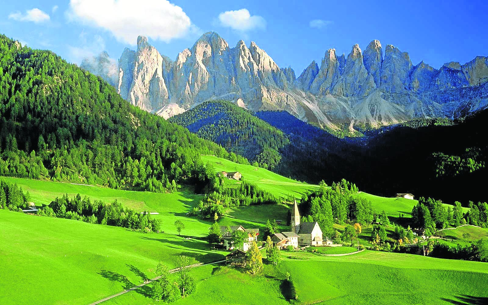
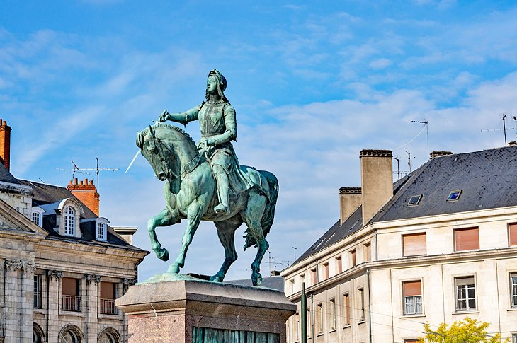

🇹🇷 Ankara
🇬🇷 Santorini

🇹🇷 Istanbul
🇳🇱 Zaandam

🇬🇷 Santorini
🇹🇷 Istanbul
🇪🇸 Dolomieten
🇹🇷 Rize
🇬🇷 Kos

🇳🇱 Oostzaan

🇹🇷 Trabzon
🇹🇷 Marmaris
🇳🇱 Amsterdam
🇫🇷 Reims
🇳🇱 Leiden
🇳🇱 Zaandam
🇫🇷 Parijs

🇳🇱 Volendam
🇳🇱 Alkmaar

🇹🇷 Ankara

🇳🇱 Amsterdam

🇪🇸 Barcelona

🇳🇱 Oostzaan
🇬🇷 Sparta
🇹🇷 Istanbul
🇪🇸 Pyreneeën

🇫🇷 Orléans

🇫🇷 Parijs
🇹🇷 Istanbul

🇫🇷 Toulouse

🇬🇷 Athene

🇫🇷 Ballons des Vosges

🇫🇷 Bordeaux

🇫🇷 Bayonne
🇳🇱 Zaandam

🇫🇷 Straatsburg

🇪🇸 Mallorca

🇪🇸 Barcelona

🇹🇷 Istanbul

🇬🇷 Rhodos

🇪🇸 Sevilla

🇬🇷 Kreta

🇫🇷 Lyon

🇪🇸 Cordoba

🇪🇸 Barcelona

🇪🇸 Bilbao

🇬🇷 Thessaloniki

🇬🇷 Santorini

🇹🇷 Istanbul
🇪🇸 Valencia

🇳🇱 Zaandijk

🇬🇷 Chios